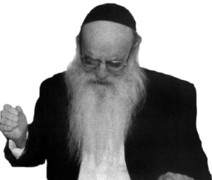
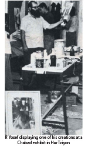
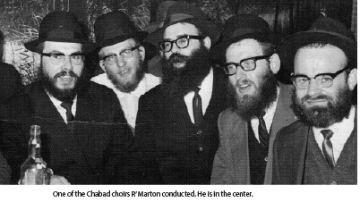

U’faratzta the Man Behind the Song
He went far in his musical studies and then changed the course of his life under the influence of the mashpia, R’ Reuven Dunin a”h. * He came up with the idea of forming a Chabad choir to sing for the public and led this choir at “Evenings with Chabad.” * An overview of the life of the Chassid, R’ Yosef Marton a”h, the man responsible for Chabad’s anthem of U’faratzta, who passed away on Chanuka.

R’ Marton inspired people with his songs, his niggunim, and his art. He was not born in Nevel or among the musical Chabad Chassidim of Nikolayev. In his youth he did not hum Chabad niggunim; in fact, he was wholly unfamiliar with this Chassidus.
A VISIT TO THE YESHIVA IN PARDES
R’ Yosef Marton was born in Schassburg in the Transylvania region in Romania on 20 Sivan 5693 to a distinguished family. After World War II he moved to Eretz Yisroel and learned in Yeshivas Kfar HaRoeh and in other institutions. After serving in the army, he attended the Technion in Haifa.
His entire perspective changed when he met R’ Reuven Dunin who was mekarev him to Chabad. The journalist Moshe Cheshin wrote about this period in an article published in Maariv fifty-four years ago:
“The road to his ascent up the ladder of musical and artistic life in Haifa was paved before him, but in the middle of his dizzying ascent, a surprising change took place in his life. At the home of a close friend, he met with a young man who began talking to him about Chabad teachings. Marton, who until that point knew nothing about Chabad, tried to get rid of the bothersome fellow, but the latter did not leave him alone. He told Marton how he found the path to Chabad and how he attained true happiness (the ‘bothersome young fellow’ was none other than R’ Reuven Dunin who was working as a tractor driver at the time).
“He continued to meet with the Lubavitcher tractor driver. Every night, they spent six hours together and spoke about Chabad. Matters became easier, more understandable and simpler. Slowly, they penetrated his heart until he agreed to visit the Chabad yeshiva in Lud that he heard about from his friend. He packed his bags and went to Lud. This is how Marton describes his first impressions of the new world he discovered:
“‘The first impression the yeshiva made on me was depressing with the meager furnishings and the bearded bachurim who were foreign to me and my world. I wasn’t used to this, not even in the few years that I learned in yeshivos. I was really in shock. From the heights of elite chevra in Haifa, I was thrown into this bizarre place, I thought. But these thoughts of mine did not last long. As soon as the bachurim came over and began talking to me, the ice melted and the barriers came down. It suddenly felt as though I knew them forever. I was extremely surprised when I found out that the bachur sitting all day in the four cubits of halacha who did not move from his book, turned out, in my conversation with him, to be knowledgeable in matters of the world. And all this, don’t forget, he knows from Chassidus.’
“Under the influence of Chabad Chassidim, he wrote to the Rebbe in America in detail about his past. He asked the Rebbe how to proceed in life. ‘Should I leave Haifa for yeshiva?’ he asked the Admur in Brooklyn. Until he received a response from the Rebbe he returned to Haifa and began attending the Tanya class given by R’ Gershon Chein. His knowledge of Chassidus grew and in every gathering he ended up in, he discussed Chabad Chassidus. In the Chamber Music Choir that he still participated in, he spoke about Chabad. In the Workers’ Choir he spoke about Chabad. At the Hebrew Reali School he lectured about Chabad. At the B’nei Akiva Choir that he conducted, he told of his impressions of Kfar Chabad. At every opportunity he explained the teachings of Chabad and spoke about those who are bringing those teachings to life. That is how he acquired the sobriquet, ‘The Chabadnik.’
“His heart was on fire. His patience ran out and he could wait no longer for the Rebbe’s answer. Even before receiving the Rebbe’s answer he picked up from Haifa and moved to the Chabad yeshiva in Lud. ‘Two days later,’ said Marton excitedly, ‘I received the Rebbe’s answer which said I should go to the yeshiva.’”

Upon arriving in yeshiva, he was captivated by the personality of the mashpia, R’ Shlomo Chaim Kesselman. Even many years later, R’ Yosef would speak nostalgically about the days he spent with the mashpia. In the mashpia’s company, the talmidim would sing Chabad niggunim and this made a tremendous impression on Marton. When they began singing the “Dalet Bavos,” “you immediately felt the atmosphere change. The forehead would crease in concentration and eyes were closed and there was an atmosphere of holiness. They would sing the fourth and third part again and again and the joyous, ‘Nye Zhuritzi Chloptzi’ which followed would pierce the heavens.”
R’ Chanoch Glitzenstein, who was involved in being mekarev writers and public figures, quickly discovered the talented young Marton and gave him the Chabad Seifer HaNiggunim. The young man looked at the notes and was particularly enamored of the niggun from Dubrovna.
He attended the sheva brachos of the chassan, R’ Moshe Landau (presently the rav of B’nei Brak) and in the midst of the celebration, the shliach, R’ Zushe Posner told all present about the Rebbe’s sicha about “U’faratzta.” R’ Marton spoke about this years later:
“R’ Zushe Posner said that on 12 Tammuz of that year, the Rebbe spoke about U’faratzta. He read the sicha to us enthusiastically. It was a command of the king to break through all obstacles in the spreading of Chassidus and it inspired us. We got up and danced and as we danced there were attempts to sing the words of U’faratzta to the tune of various Chabad niggunim. One tried this tune, another tried another tune, but it didn’t work well.
“I suddenly remembered the Dubrovna niggun. I put the words of U’faratzta to that niggun as we danced and it took off. I repeated it again and again until people felt that this was The Niggun. It was the popular tune for the next while in yeshiva and then it reached Kfar Chabad. That year I spent Simchas Torah in Kfar Chabad and they sang nothing but U’faratzta from morning till night. It spread like wildfire.
“I’ll never forget Zushe Partisan who began singing U’faratzta on the table and said the one word ‘u’faratzta’ again and again, singing it for a long time.”
Many years ago, R’ Marton was interviewed by Beis Moshiach. He said, “I remember hearing from someone that when the Rebbetzin heard this niggun, she said: S’hert zich u’faratzta (It sounds like u’faratzta).”
R’ Glitzenstein said how the niggun reached the Rebbe:
“It was 5719/1958 when I went to the Rebbe for Sukkos. The second night of Yom Tov I was invited to eat the meal with the Rebbe in the Rebbe Rayatz’s home. R’ Abba Levin from Eretz Yisroel was also invited. During the meal, the Rebbe asked the two of us to ‘say a niggun.’ R’ Abba was very shy and began to prod me to sing. I began singing U’faratzta, at first just the niggun without the words and the second time, with the words. The Rebbe looked at us as we sang the new niggun arranged by R’ Yosef Marton.
“The next day there was a farbrengen after the davening. The Rebbe made Kiddush and then said (in Yiddish), “Let us hear U’faratzta, the nusach from Eretz Yisroel. Where are those from Eretz Yisroel? Where is Glitzenstein?” I stood facing the Rebbe down below. The Rebbe noticed me and instructed me to sing. I began singing U’faratzta again and again until the crowd caught on. After that, they sang U’faratzta at every farbrengen.
IN CHINUCH 
After a short stint in the yeshiva in Lud, R’ Marton began working as a principal in the school in Lud under the Reshet Oholei Yosef Yitzchok. Then he switched to run the Chabad school in Ganim in Yerushalayim and became an outstanding educator.
He married Chana Gittel and was one of the founders of the Chabad community in the Pagi (Poalei Agudas Yisroel) neighborhood in Yerushalayim. Tragically, his wife died in her youth. A few years later, he married a woman named Shaindel and settled in Bayit Vegan in Yerushalayim and was one of the founders of the Chabad community there.
CHABAD CHOIR
R’ Yosef had the idea of forming a Chabad choir that would sing Chabad niggunim which were not yet known by the public. He presented his idea to the Rebbe and received this response:
“About what you wrote concerning organizing a choir of Lubavitchers and Chabad niggunim, this is very, very proper. What the Rebbe, my father-in-law said is known regarding the choir in Tomchei T’mimim in Lubavitch … It is most desirable that they be involved in this now so that it will be ready for the month of Tishrei and perhaps also for 18 Elul if there is a farbrengen on this special day when the two luminaries were revealed. Of course, you have permission and the privilege to repeat this to Anash who are able to help in this. (Igros Kodesh vol. 18, letter #6977)
The choir was formed in 5723 as the Rebbe instructed, and it was comprised of Chabad Chassidim from Kfar Chabad and Yerushalayim. They appeared in many places around the country and were mekarev numerous people to the depth of Chassidic melodies. They also made special appearances outside of Chabad centers such as the rare performance in Caesarea.
In 5730, there were “Evenings with Chabad” for the broader Israeli public, who were exposed for the first time to Chabad niggunim of simcha, gaaguim and d’veikus. R’ Yosef conducted this Chabad choir, which sang before thousands of people at the Binyanei HaUma in Yerushalayim and at the Heichal HaTarbut in Tel Aviv.
At the same time, in accordance with the Rebbe’s instructions, he did much to reconstruct old niggunim and to write down niggunim that he heard from elderly Chassidim. For a long time, he worked with Nicho’ach which was run by his friend, R’ Shmuel Zalmanov, and recorded many niggunim that were known, up until then, only by very few.
In 5721, R’ Yosef and R’ Naftali Krauss prepared a Chassidic Songbook for the Education Ministry, which was meant for students who were not from Chabad homes. While editing the songbook, some questions arose about making certain adjustments to Chassidic songs. The two of them wrote a letter to the Rebbe and asked that they be answered right away without having to wait their turn amongst the many petitioners.
In the Rebbe’s response in the margin of their letter, he noted that they had been answered out of turn. Here are the questions and answers from the Rebbe’s response:
Regarding their question about whether they should adjust the emphasis on various syllables in the words to niggunim so they would fit the rules of Hebrew grammar, m’lera and m’l’eil, the Rebbe said there was no reason to do so since when singing we are not at all particular about these rules, and not even about more essential rules, to the extent that sometimes we add syllables.
Regarding the question about whether to arrange the tunes for two person harmonies, which would make it easier to pitch it to the teachers, the Rebbe said that a niggun with two person harmonies cannot be sung by one person and if, for example, they did not prepare a second singer then it would not be suitable for use. In any case, if there was a real need for such arrangements, it is not a matter of principle and it could be done.
Regarding the question as to whether to note the name of the arranger, the Rebbe said it depends on the custom of the place and the reaction of the public. (Igros volume 20, letter #7565)
MIVTZA TEFILLIN
Forty years ago, during the Aseres Yemei T’shuva 5734, R’ Yosef Marton received a “general-personal” letter from the Rebbe, the likes of which he received every year. But at the end of the letter, the Rebbe added a handwritten note: “Surely you are involved in Mivtza T’fillin.” A number of people received answers like this since the Rebbe announced the t’fillin campaign, but for R’ Yosef, it was a bit different, as he related:
“I was very surprised by this note since, for various reasons, I had not gone out to put t’fillin on with people on the street. Then, on Motzaei Yom Kippur, I was drafted in the war that had just begun. I was sent southward to the Ketziot base. I arrived at the base the next day.
“I used some downtime to put t’fillin on with soldiers. Between Yom Kippur and Sukkos I stood in a place where many soldiers passed on their way to the front and put t’fillin on with people nonstop. There were also some senior military figures who were not embarrassed to come over to me and put on t’fillin. I think that among the good things that came out of the Yom Kippur War was the fact that I put t’fillin on with people as the Rebbe wanted.”
***
In recent years, R’ Marton became seriously ill. He passed away on 29 Kislev. He is survived by his wife, sons and daughters, some of whom are on shlichus.
Berger. "U’faratzta the Man Behind the Song." Beis Moshiach, no. 907 (December 16, 2013).